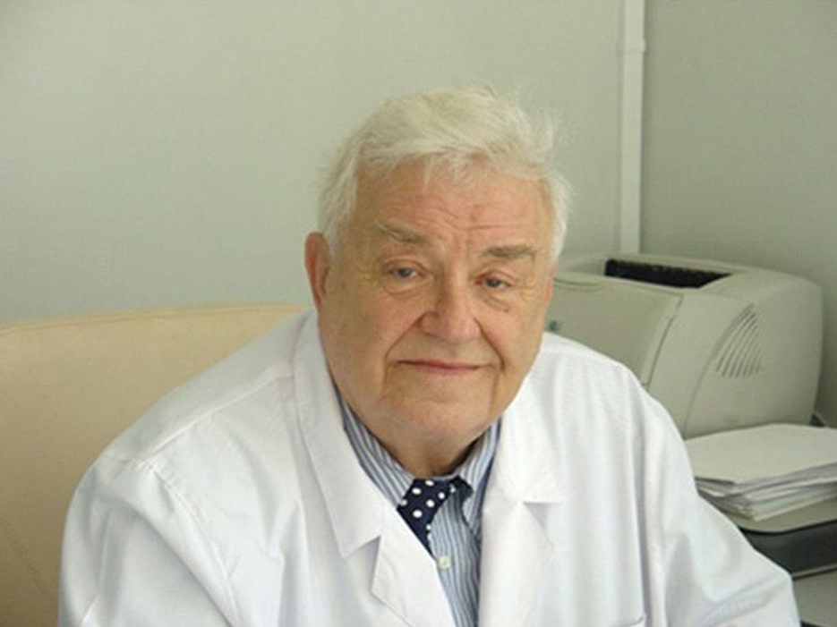
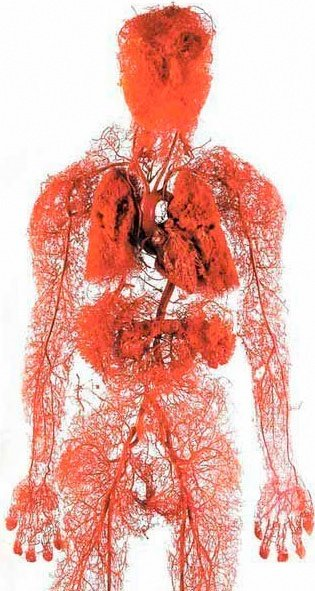
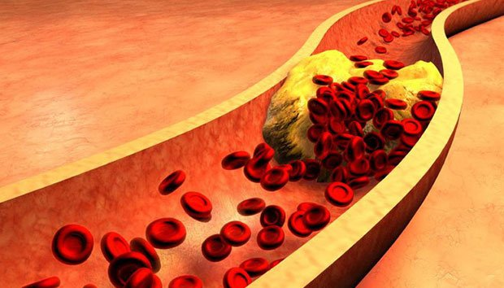
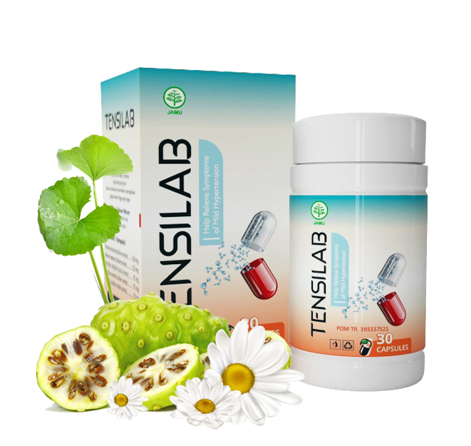

15:26 , 23.3.2022
Sakit Kepala, Tekanan Darah Tinggi, Nyeri sendi, Sakit
Punggung,
Sakit pada Leher, Kaki Bengkak, Pembengkakan Wajah, Tinitus, Jari Mati Rasa Dan Anggota Badan Dingin,
Penglihatan Yang Buruk, Pikiran Kosong, Pelupa. Banyak Orang Menyebut Gejala Ini Pertanda Usia Tua,
Padahal
Ini Semua Adalah Tanda Penyakit.
Mengapa pembuluh darah menentukan 89% kesehatan
Anda?
4 tanda jelas dan 7 tanda peringatan pembuluh
darah
terkontaminasi
Bagaimana cara membersihkan pembuluh darah di
rumah
dengan aman?
Pembuluh darah keracunan memiliki tanda-tanda
kecuali kolesterol tinggi
Pertanyaan-pertanyaan ini dijawab oleh kepala departemen bedah vaskular di
Universitas
Medis Charité Berlin, profesor, praktik bedah saraf, dan Dr. Abraham Gormalley.

Abraham Gormalley telah melakukan lebih dari 15.700 operasi otak.
Pasiennya yang paling muda baru berusia 4 hari.
Abraham Gormalley tahu bagaimana menjelaskan prosedur medis yang rumit dengan
kata-kata sederhana. Dia telah menulis 51 buku ilmiah populer dan panduan penelitian untuk orang-orang
yang
belajar tentang kedokteran. Dia menegaskan bahwa pembuluh darah di dalam tubuh menentukan 89% kesehatan,
dan
kesehatan manusia tergantung pada kemurnian pembuluh darah.
Mengapa pembuluh darah menentukan 89% kesehatan Anda?
Tn. Abraham Gormalley, ada informasi bahwa pembuluh darah menentukan 89%
dari
kesehatan tubuh. Apakah informasi ini benar? jika demikian, mengapa bisa dikatakan demikian?
Ditanya apa organ terbesar dalam tubuh manusia? Saya yakin 90% kita tidak tahu. Bahkan
mahasiswa kedokteran pun bisa salah. Sebagian besar jawaban itu adalah otak dan hati. Dalam buku-buku
pendidikan, dikatakan demikian. Namun, kenyataannya adalah organ terbesar dalam tubuh adalah sistem
peredaran
darah.
2,5 kali
panjang total pembuluh darah orang dewasa 2,5 kali keliling
Bumi

Bayangkan! Jika kita membuang semua pembuluh darah di
tubuh
manusia dan mengikatnya ke dalam rantai panjang, panjang rantai ini sekitar 100.000 km.
Sebagai perbandingan - panjang ekuator Bumi adalah 40.000 km. Ternyata rantai pembuluh
darah dalam tubuh manusia yang mampu mengelilingi seluruh planet 2,5 kali.
Apa pendapat Anda tentang skala pembuluh darah?
Mạch máu không chỉ là ống mang máu. Mạch máu liên
kết
và nuôi toàn bộ các cơ quan và các hệ thống của cơ thể. Do đó nếu máu đi qua cơ quan bị bệnh thì
có
thể mang mầm bệnh đó đi khắp cơ thể.
Nyeri tungkai - varises – pembengkakan yang terasa nyeri dan
berat, sulit berjalan, terasa dingin atau kesemutan di kaki Anda. Tumit pecah. Sirkulasi darah yang buruk -
tidak dapat melawan bakteri, dan karenanya jamur tumbuh. Kuku tebal dan panjang.
Vena hepatika tersumbat – hepatitis. Mulut pahit. Setelah
makan
lemak - mulas.
Pembuluh melemah dan tercemar dalam sendi – tulang rawan
kering.
Dislokasi dan rasa sakit, osteoarthritis, herniated disc muncul.
Gangguan anal vena – pembentukan wasir dan prolaps.
Pembuluh darah mata – penglihatan berkurang, air mata sering
keluar berlebih, bintik hitam pada mata, katarak. Mata merah, gejala yang sering kita anggap sebagai
kelelahan,
sebenarnya adalah pendarahan mikroskopis - pecahnya kapiler mata terkecil.
Sirkulasi otak terhambat – Anda mengalami pusing, telinga
berdenging, dan kelupaan. Tentunya Anda memiliki situasi ini, Anda memasuki dapur dan kemudian tidak ingat
mengapa Anda pergi ke sana. Atau ketika Anda melihat suatu objek, Anda merasa akrab tetapi tidak bisa
mengingat
di mana benda itu terlihat. Itu bisa menjadi tanda melemahnya pembuluh darah otak.
Dalam penyakit pembuluh darah, tidak mungkin untuk
tidak
menyebutkan tekanan darah tinggi, stroke, Nutrisi diangkut ke organ dan sel melalui sirkulasi darah,
hidup
kita juga ditentukan oleh pembuluh darah ini. Ketika pembuluh darah tersumbat, hidup kita akan
berhenti.
Pembuluh darah yang "tersumbat" menyebabkan semua masalah pada organ itu
Contoh kelebihan berat badan, yang berkaitan erat dengan pembuluh darah. Pembuluh
darah
tersumbat dengan kolesterol, yang menyebabkan kekurangan nutrisi, atrofi, dan pembuluh darah tidak mampu
menyediakan mereka dengan jumlah nutrisi yang tepat. Saat itu, otak mengirimkan sinyal yang mengingatkan
kita
untuk makan. Dan meskipun kita makan banyak makanan ke dalam tubuh kita, nutrisi tidak dapat mencapai sel
atau
organ kita yang membuat tubuh menginginkan kalori sehingga kita memiliki kebutuhan konstan untuk junk food,
makanan manis, dan lemak.
Akibatnya, dokter memberi tahu kami, "Anda memiliki tekanan darah tinggi karena Anda
kelebihan berat badan." Mereka bingung penyebab dan hasilnya. Bukan hipertensi disebabkan oleh kelebihan
berat
badan. Yang kelebihan berat badan adalah karena hipertensi.
Ada pepatah yang sangat terkenal berkata "Kesehatan
adalah
segalanya - Tidak ada kesehatan bukanlah apa-apa"; Orang-orang Vietnam berkata, "Rumah bersih itu indah,
mangkuk bersih itu enak."
Karena itu, saya selalu memberi tahu orang-orang di sekitar saya: Jika Anda ingin
menjalani kehidupan yang lama dan panjang umur, bersihkanlah pembuluh darah ! Makanan bersih adalah kunci
untuk
menghilangkan 90% penyakit kronis yang beberapa di antaranya dianggap "tidak dapat disembuhkan".
Apa faktor lain yang mencemari pembuluh darah selain
kolesterol?
Semua orang tahu bahwa kolesterol itu buruk. Ini menyumbat pembuluh darah kita,
mempersempit aliran darah kita dan menghambat aliran darah. Tapi pelakunya tidak sendirian kan?

6,7 kg
Jumlah total kotoran yang terakumulasi dalam pembuluh darah dalam 45
tahun
"KOLESTEROL"
Plak kolesterol, juga dikenal sebagai "plak aterosklerotik", menyumbang sekitar
65-70%
dari polusi pembuluh darah.
Menurut penelitian pada usia 50, deposit kolesterol hingga 5 kg menumpuk di
pembuluh
darah. Akumulasi kolesterol mempersempit pembuluh 4-5 kali.
Bayangkan itu. Jika bagian normal dari pembuluh darah
setebal jari, maka 5 kg kolesterol dalam tubuh dapat menyumbat begitu hebat.
Plak kolesterol itu sendiri tidak secara langsung mengancam jiwa. Namun,
konsekuensinya
seperti penurunan kualitas hidup, tekanan darah, sakit kepala dan nyeri sendi, kelelahan, volume gumpalan
darah
yang terakumulasi dalam pembuluh darah kita jauh lebih berbahaya.
"BOBOT"
Gumpalan darah menumpuk jauh lebih sedikit daripada "kolesterol" sekitar 800 gram -
1
kg. Namun, ancamannya terletak pada ketidakstabilannya. Kapan saja, gumpalan darah dapat pecah dan mengalir
di
pembuluh darah ke organ. Jika gumpalan itu cukup besar, itu akan "memeras" pembuluh darah korban. Iskemia
terjadi - benar-benar menghentikan suplai darah ke organ bergizi ini.
Stroke iskemik - obstruksi serebrovaskular. Infark miokard - stasis arteri jantung.
Iskemia hati, pneumotoraks, gagal ginjal. Wasir sebenarnya disebabkan oleh iskemia anal. Penyumbatan
pembuluh
terkecil pada kaki akhirnya mengarah ke gangren - gangren.
Stroke iskemik - penyumbatan serebrovaskular. Infark miokard - stasis arteri
jantung.
Iskemia hati, pneumotoraks, gagal ginjal. Wasir benar-benar iskemia anal. Bahkan pembuluh tersumbat pada
pembuluh terkecil di kaki akhirnya menyebabkan nekrosis - gangren.
"MAKAN SIANG"
Kalsifikasi pembuluh darah disebabkan oleh residu obat-obatan kimia dan zat
tambahan
makanan. Mereka menumpuk pada orang dewasa berusia 52 dengan jumlah 300 - 400 gram. Kebanyakan kalsifikasi
terjadi di pembuluh otak.
Kapur berbahaya karena struktur kristal yang tajam. Dengan penyempitan yang
signifikan
- penyempitan pembuluh darah yang disebabkan oleh stres, olahraga atau cuaca membuat kristal terkalsifikasi
tajam yang dapat merusak pembuluh darah. Pecahnya pembuluh darah otak menyebabkan stroke hemoragik.
4 tanda langsung dan 7 tanda tidak langsung melemahnya pembuluh
darah
Gejala apa yang menunjukkan bahwa pembuluh darah saya tersumbat oleh
"kotoran"? Bagaimana memahami bahwa tubuh memanggil kita: "Bersihkan pembuluh darah sesegera
mungkin!"
Faktanya, jika Anda berusia di atas 45 dan tidak pernah menggunakan obat untuk
membersihkan tubuh Anda, saya jamin Anda memiliki masalah dengan pembuluh darah.
45 tahun
Setelah usia ini, pembersihan darah sangat penting
Pembuluh darah yang tersumbat oleh kolesterol, pembekuan darah, dan kalsifikasi
sebenarnya adalah proses penuaan alami. Tentu saja, makanan, obat-obatan, rokok, dan alkohol dewasa ini
meningkatkan proses "sampah" ini sebanyak 5-8 kali. Tapi kita semua manusia dan tidak bisa bersembunyi di
dunia
kita sendiri selamanya.
Gejala utama pembuluh darah yang terkontaminasi
Jika Anda telah didiagnosis menderita hipertensi - ini adalah manifestasi
langsung
dari pembuluh darah yang sakit. Indeks tekanan darah terus meningkat? Dan haruskah Anda menggunakan obat
dari
Barat untuk menstabilkan tubuh? Bagian vaskular Anda hanya 30% aktif. Sisanya padat ditutupi dengan plak
kolesterol, pembekuan darah dan dikalsifikasi.
Karena itu, tekanan terkecil, perubahan cuaca, faktor lingkungan sangat
mempengaruhi
kesehatan. Tekanan meningkat, kepala mulai terasa sakit, dan persendian menjadi sulit digerakan.
4 penyakit yang disebabkan oleh pembuluh darah kotor:
-
1. "Tekanan darah tinggi"
Tekanan darah tidak stabil atau terus meningkat, perlu diturunkan
dengan
obat-obatan. Semakin besar area pembuluh darah, semakin rendah tekanan darah. Karena itu, ketika
pembuluh darah mengandung kotoran, bagian lumen berkurang, tekanan pada dinding pembuluh
meningkat
lagi yang menyebabkan peningkatan tekanan darah. Karena itu, membersihkan pembuluh darah sangat
penting.
-
2. "Varises"
Jelek, tendon bengkak di kaki, parah dan menyakitkan, bengkak. Polusi
kolesterol dan gumpalan darah "menyumbat" vena. Perlahan-lahan, "spider veins" muncul, dan
berkembang menjadi insufisiensi vena penuh.
-
3. "Wasir"
Saat saluran anal tersumbat, kelenjar getah bening membengkak. Jika
pembuluh suplai darah tersumbat pertama, fisura anus terjadi.
-
4. "Nyeri tulang dan sendi"
Ini adalah kurangnya sirkulasi darah di tulang rawan. Tulang rawan
mengeras dan mulai aus, tidak ada waktu untuk pulih. Jika tidak diregenerasi dan diberikan
nutrisi
tepat waktu, ia akan kehilangan kemampuannya untuk bekerja. Garam tidak ternetralisir dan mulai
menumpuk tanpa terkendali, menciptakan tumor.
7 tanda peringatan:
-
1. "Pembengkakan"
Zat beracun, residu tidak diekskresikan dalam waktu tertentu,
menyebabkan
pembuluh darah terkontaminasi. Mereka mengganggu metabolisme air garam. Di malam hari, kaki
membengkak sampai kaus kaki membekas pada pergelangan kaki. Wajah dan jari membengkak. Perut
yang
bengkak juga menandakan pembengkakan organ dalam
-
2. "Tinnitus"
Dari pekikan yang tidak menyenangkan hingga melolong keras, Anda
tidak
bisa berkonsentrasi. Ini adalah konsekuensi dari meningkatnya tekanan di pembuluh otak yang
menekan
gendang telinga.
-
3. "Pusing"
Perasaan kesakitan, pusing akut dan datang secara tiba-tiba,
menunjukkan
bahwa pembuluh darah "lapar".
-
4. "Insomnia"
Apakah Anda merasa mengantuk dan apatis, sulit tidur, berbaring di
malam
hari dan masih tidak bisa tidur? Alasannya adalah bahwa anemia memasok kelenjar pituitari.
Berhenti
memproduksi melatonin - hormon tidur.
-
5. "Lelah"
Kurang vitalitas, tidak ingin melakukan apa pun, hanya ingin tidur
dan
makan. Perasaan ini berasal dari transisi tubuh ke mode hemat energi. Organ tidak menerima
makanan
yang cukup melalui pembuluh darah yang terkontaminasi dan agar tidak mati, tubuh Anda berusaha
mengurangi tingkat perbedaan aktivitas.
-
6. "Masalah penglihatan"
Titik hitam pada mata, mata berair berlebih, pandangan kabur dan
terasa
seperti kabut di mata. Ini adalah gejala kelemahan pembuluh darah di mata.
-
7. "Nyeri sendi"
Perubahan cuaca menyebabkan nyeri sendi. Ketika Anda bangun di pagi
hari
Anda dan merasa masih perlu istirahat, tubuh Anda terasa lumpuh. Perlu waktu untuk pemanasan dan
rileks.
Bahkan jika Anda tidak memiliki tanda-tanda ini, Anda harus membersihkan
pembuluh
darah dan tubuh Anda.
Kebanyakan orang merasakan gejala-gejala ini secara
satu
per satu setelahnya dan kemudian muncul secara bersamaan. Sayangnya orang-orang ini berusaha untuk
mengobati
setiap penyakit secara individual. Tablet effervescent untuk menurunkan tekanan darah, salep untuk
varises,
obat topikal untuk wasir, gel untuk osteoartritis. Dan tentu saja, tidak lupa juga dengan obat
penghilang
rasa sakit.
Mereka hanya membuang uang di apotek. Karena penyebab semua penyakit adalah sama
-
gangguan peredaran darah. Dan hanya perlu dimulai dari memperbaiki pembuluh darah.
Bagaimana cara membersihkan kolesterol darah beku dan pembuluh darah yang
komplikasi?
Kami akan memberikan saran medis khusus, yaitu pasien Lisa dari di
jakarta.
57 tahun, sudah menikah, dia didiagnosis menderita kelebihan berat badan, hipertensi dan varises. Dia
bereaksi terhadap cuaca - dia lemah dan mengantuk serta kepalanya selalu sakit.
Bagaimana cara membantu Lisa? Bagaimana dia bisa membersihkan pembuluh
darah
tanpa pergi ke dokter untuk mendengar saran klise seperti "Anda harus menurunkan berat badan", "Anda
harus
berolahraga", "Anda harus diet", "Ini adalah pertanda penuaan" dan lebih banyak lagi?
Kebanyakan produk farmasi tidak memiliki penyembuhan
yang
pasti, mereka dapat melemahkan penyakit tetapi menyebabkan efek samping.
Ya, kebenarannya adalah obat modern masih memiliki kekurangan. Itulah sebabnya
saya
sepenuhnya memahami keengganan untuk berkonsultasi dengan dokter. Tapi Lisa bisa sembuh secara total di
rumah.
Untuk membersihkan pembuluh darah dengan aman, saya ingin menyebutkan produk
yang
optimal -
Tensilab. Ini membantu memperpanjang umur 12-17 tahun, menambah energi dan tetap
tenang, dan Anda
tidak lagi harus hidup dalam kesengsaraan saat usia tua.
Aman seperti saat menggunakan ramuan. Dan dalam hal efektivitas, ia menempati
urutan
kedua setelah operasi pemurnian stent. Namun, tidak seperti operasi, tidak memiliki komplikasi atau efek
samping. Perawatan membersihkan semua pembuluh tubuh secara alami. Dari arteri besar, tebal hingga kapiler
terkecil.
Tensilab adalah 100% pil alami yang terbuat dari
tumbuh-tumbuhan
yang berharga dan langka. Nutrisi ini menghilangkan lendir kolesterol dari pembuluh darah, bekuan darah yang
menempel di dinding pembuluh, kalsifikasi - residu obat. Apa pun yang mengganggu aliran darah.
Akumulasi toxic selama bertahun-tahun meracuni hidup Anda akan sepenuhnya
dihilangkan oleh
Tensilab hanya dalam 1 bulan meminumnya.
Setelah 1,5 bulan, Tensilab melarutkan dan
menghilangkan
4.000 g susunan kolesterol. Ini mencairkan 900 gram - 1000 g volume gumpalan dan menghilangkan 350 - 400
gram kalsifikasi.
Sakit kepala hilang, tinnitus menghilang. Otak dipelihara dengan baik oleh
pembuluh
darah yang bersih, bekerja dengan kecepatan superkomputer. Memori transparan dan akurat.
Indera ditingkatkan, Anda dapat mendengar suara-suara menyenangkan yang tidak
Anda
perhatikan sebelumnya. pendengaran membaik, Anda bahkan dapat mendengarkan percakapan di kamar
sebelah.
Merasakan aroma dan warna baru. Hidung tersumbat, pilek dan alergi hilang.
Pemulihan
bronkial. Napas segar dan lembut. Udara segar memenuhi paru-paru, menyebar ke seluruh tubuh dalam gelombang
yang
menyenangkan, menyebabkan sedikit euforia.
Rasa menjadi segar dan menyenangkan. Hidangan sederhana juga bisa menghadirkan
kegembiraan luar biasa. Anda makan sedikit tetapi kenyang lama. Tidak ada lagi keinginan untuk makan makanan
manis dan lemak terus menerus.
Sendi bekerja bersama secara fleksibel tanpa rasa sakit, bergerak dengan lancar
seolah-olah menambahkan pelumas ke mesin, mengganti cairan hitam dan kotor dengan minyak yang bersih dan
segar,
memastikan gesekan sempurna.
Sangat mengesankan. Bahkan, saya belajar tentang
Tensilab untuk pertama
kalinya.
Walaupun saya sering mendengar tentang nutrisi. Di Jepang dan Israel, mereka secara hukum menetapkan status
gizi
sebagai pengobatan pilihan mereka. Dan di Jerman metode ini belum dapat diandalkan.
Lisa kami mungkin mencoba ratusan obat yang berbeda, tetapi tidak
berhasil,
dia berjanji pada dirinya sendiri bahwa dia tidak akan menghabiskan uang untuk metode ajaib yang
diiklankan.
Dengan cara yang sama Penicillin membantu orang mengatasi penyakit pada saat itu: disentri, tifus, dan
wabah.
Tensilab akan menghilangkan penyakit vaskular dari waktu ke waktu. Langkah pertama telah diambil - Jepang,
Kanada, Korea Selatan, Swiss dan Israel - telah melegalkan pembersihan vaskular dengan obat-obatan alih-alih
perawatan obat.
Di Jerman,
Tensilab hanya didistribusikan secara resmi di rumah sakit Berlin. Itu
diindikasikan untuk
perawatan menteri, delegasi, selebritas, dan elit lainnya. Sisanya didistribusikan ke pasar, kelas bawah.
Biarkan saya menceritakan sebuah kisah keraguan.
Pada tahun 1928, antibiotik pertama, penisilin, ditemukan. Sangat mudah
untuk mengobati disentri dan tifus, di mana sebagian besar orang meninggal karena penyakit ini.
Namun, kebanyakan orang tidak percaya itu dapat disembuhkan karena
mereka
telah 100 kali kecewa ketika berusaha menemukan obatnya. Mereka yang kecewa 100 kali tetapi tidak
takut
untuk menguji pada yang ke 101 untuk pulih. Dan mereka yang menyerah: "Mereka akan menunggu obat
hebat
lain," meskipun solusinya tepat di bawah hidung mereka.
Keraguan adalah pengkhianat, karena kita akan kehilangan apa yang
dapat
kita capai, karena takut untuk mencoba.
Dengan cara yang sama Penicillin membantu orang mengatasi penyakit pada saat
itu:
disentri, tifus, dan wabah.
Tensilab akan menghilangkan penyakit vaskular dari waktu ke waktu. Langkah
pertama telah diambil - Jepang, Kanada, Korea Selatan, Swiss dan Israel - telah melegalkan pembersihan
vaskular
dengan obat-obatan alih-alih perawatan obat.
Di Indonesia,
Tensilab hanya didistribusikan secara resmi di rumah sakit Di
jawa.
Itu diindikasikan untuk perawatan menteri, delegasi, selebritas, dan elit lainnya. Sisanya didistribusikan
ke
pasar, kelas bawah.
Lisa juga berpikir bahwa keraguan adalah musuh terburuk manusia, jadi
dia
tidak takut untuk mencoba hal-hal baru, sehingga dia sehat.
Bayangkan saya memiliki
Tensilab di tangan saya. Apa yang terjadi
selanjutnya? Bagaimana cara kerjanya? Molecular
Tensilab adalah bom oksigen kecil. Mereka
meledakkan
plak kolesterol di pembuluh darah Anda dan memungkinkan aliran darah mengalir dengan leluasa.
Di ASIA,
Tensilab dipuji sebagai "Mesin pembersih". Ini secara akurat
mencerminkan sifatnya.
Efek peroksida (oksidasi) - mempercepat penyerapan molekul terapeutik
melalui pengayaan oksigen. Itulah sebabnya
Tensilab sangat efektif. Bahan-bahan dalam tablet mudah
diserap di kerongkongan. Karena itu,
Tensilab tidak menyebabkan mulas, kepahitan di mulut,
bersendawa, tidak mengiritasi usus dan melindungi perut. Bahkan pasien dengan sakit maag dapat
meminumnya
Tensilab.
PEMBERSIH DARAH
Ekstrak buah mengkudu membersihkan penyumbatan kolesterol, menurunkan
tekanan darah, melancarkan peredaran darah, mengatur tekanan darah, meringankan sakit pusing, susah
tidur. Tulang rawan dilumasi, mengaktifkan mekanisme penyembuhan diri. Tidak ada lagi rasa sakit di
leher, punggung, sendi. Jari dan lutut tidak lagi sakit saat cuaca berubah.
Tensilab mengandung ekstrak obat langka yang bekerja secara
harmonis
untuk membersihkan pembuluh darah.
Pembengkakan menghilang. Bahkan setelah seharian berolahraga, atau berdiri diam,
kaki tidak akan membengkak. Pasokan darah ke kulit dikembalikan - spider veins and veins menghilang. Varises
secara bertahap menurun, kelenjar getah bening seimbang.
MENGKONVERSI ENERGI
Beta Glucan Meningkatkan sistem kekebalan tubuh, menstabilkan tekanan
darah,
mengontrol kolesterol darah, menyeimbangkan lemak darah, membantu dalam kontrol dan pengobatan diabetes.
Tensilab menghilangkan kolesterol yang menyumbat pembuluh darah dan merangsang pembakaran lemak yang tepat.
Berkat ini, Anda merasakan aliran energi yang kuat, Anda selalu penuh energi, mata Anda menjadi hidup, kaki
Anda
kuat, ingatan Anda jelas.
BERAT BADAN TURUN
Spirulina mengandung protein, zat besi, potasium, magnesium dan
banyak mineral lain yang sangat baik untuk kesehatan, memiliki efek menurunkan tekanan darah, mendukung
penurunan berat badan yang efektif, mengurangi demam, dan mengendalikan diabetes. Menenangkan dan
merilekskan
pembuluh darah terjepit karena kurangnya aliran darah. Sakit kepala menghilang, tidak ada lagi tinitus,
paru-paru dan fungsi bronkial lancar dan mudah.
PEMULIHAN KESEHATAN
Ganoderma Lucidum mengandung germanium, polisakarida, sterois,
asam
ganoderic ... untuk mendukung pengobatan hipertensi yang efektif dan aman, membantu mengatur dan
menstabilkan
tekanan darah, mencegah pembekuan darah dari penyumbatan pembuluh darah, mengurangi konsentrasi tingkat
lemak
darah. Nutrisi ini membantu melarutkan darah beku dan membersihkan simpanan kalsium di pembuluh darah.
Seolah-olah mengeluarkan kantong semen dari jantung, detak jantung menjadi lambat dan mantap, sepenuhnya
mengatasi aritmia dan takikardia. Lupakan serangan jantung yang tajam, risiko serangan jantung kembali ke
0.
GULA DARAH
Pare/Melon Pahit meningkatkan metabolisme charantin,
polypeptide-P
dan vicine dalam Pare membantu menghambat metabolisme dan penyerapan gula dalam tubuh, mencegah diabetes dan
menstabilkan gula darah pada penderita diabetes.
Efek kupu-kupu
Tensilab seperti kepakan kupu-kupu yang
menyebabkan reaksi
berantai dari perubahan spektakuler. Dimulai dengan pemurnian kotoran yang terakumulasi dalam pembuluh darah
selama beberapa dekade, langkah demi langkah,
Tensilab memulai reaksi berantai memmbersihkan tubuh.
2 bulan menggunakan Tensilab seperti dilahirkan
kembali.
LUAR BIASA
Anda bangun di pagi hari dan dengan mudah bangun dari tempat tidur tanpa
memaksakan
diri untuk berdiri, menarik dan menggosok kaki yang kaku, mencubit punggung dan leher Anda. Di pagi hari,
tubuh
penuh energi serta kekuatan, karena semalaman pembuluh darah benar-benar dibersihkan, semua organ diberi
makan
dan diistirahatkan dengan benar. Tidak ada bagian tubuh yang kekurangan suplai darah, sehingga memberi
kekuatan
pada hari itu.
NIKMATI HIDUP
Untuk sarapan, Anda makan sandwich renyah dengan lapisan tebal mentega dan steak
daging sapi yang lezat tanpa khawatir tentang tekanan darah tinggi atau gula darah tinggi. Tidak ada lagi
sendawa, sakit perut.
Tensilab membersihkan pembuluh darah di perut, membantunya berfungsi secara efektif
dan
terus-menerus.
ENERGI PENUH
Ketika Anda keluar dari rumah, Anda tidak perlu lagi khawatir tentang kaki Anda
-
berjalan tidak lagi menjadi beban, Anda bisa berjalan setidaknya sepanjang hari tanpa merasa lelah dan
bengkak.
Sandal, sepatu, kaus kaki tidak membekas pada kaki.
BERSANTAI
Anda benar-benar tenang dan santai. Tidak ada lagi rasa sakit yang konstan yang
membuat Anda tidak fokus pada pekerjaan Anda. Tidak ada lagi malam tanpa tidur, pegal-pegal, sangat
menikmati
hidup, merasakan suara dan aroma yang akrab, warna yang telah lama dilupakan. Rasa sakit terus-menerus
menelan
kesadaran Anda, tidak memungkinkan Anda untuk fokus pada apa pun
KINERJA LUAR BIASA
Bahkan setelah seharian bekerja keras, Anda pulang ke rumah dengan semangat yang
menyegarkan dan lembut. Otak Anda bekerja seperti arloji Swiss, tanpa merasa lelah.
MUDAH TIDUR
Dan sekarang, setiap kali Anda berbaring di tempat tidur, Anda dapat dengan
cepat
tertidur. Tidak akan ada lagi saat-saat ketika Anda menggeliat di tempat tidur di tengah malam,
kadang-kadang
membalikkan lutut Anda dan masih tidak bisa tidur. Sekarang semuanya sederhana - Anda memutuskan kapan harus
tidur dan tubuh Anda mematuhi perintah Anda.
Kelangkaan dan insentif produk
Tensilab, sejauh yang saya tahu, tidak lagi tersedia di sebagian besar
apotek? Mengapa demikian?
Sayangnya begitu. Sejak awal tahun ini,
Tensilab tidak lagi dijual di
apotek.
Penyebab situasi ini adalah konflik kepentingan antara rantai toko obat dan
pabrikan
Tensilab. Apotek ingin meningkatkan harga
Tensilab dengan menerapkan biaya produksi tambahan. Perwakilan
apotek membenarkan bahwa biaya tambahan seperti itu membantu mereka mempertahankan pendanaan. Karena
Tensilab
adalah produk yang hanya bisa dibeli 1-2 kali, setelah sembuh tidak perlu membeli lagi. Selain itu, setelah
membersihkan pembuluh darah dengan pil ini, kita tidak perlu obat lain lagi. Tidak ada lagi orang yang
membeli
obat antihipertensi, obat penghilang rasa sakit, asma dan obat diabetes. Hal ini menyebabkan kerugian bagi
apotek. Jadi mereka menawarkan untuk menjual
Tensilab dengan harga tertinggi.
Akibatnya, pabrik
Tensilab telah berhenti menghubungi semua apotek dan beralih
ke
distribusi eksklusif melalui Internet. Hal ini memungkinkan produsen untuk menghubungi langsung dengan
pelanggan, mengoptimalkan biaya produksi dan distribusi, memberikan insentif eksklusif kepada pelanggan
tanpa
harus melalui perantara.
Promosi "Pembersih Darah"

Universitas kami, bersama-sama dengan Pusat Penelitian Medis Nasional untuk
Bedah
Kardiovaskular, Kantor Pos Berlin dan produsen Jerman, Tensilab, telah meluncurkan program insentif
berbasis
proyek jarak jauh.
Siapa pun yang benar-benar ingin memesan
Tensilab dapat bergabung.
Bagaimana cara bergabung dengan program ini?
Untuk mendapatkan Tensilab, Anda harus memenuhi ketentuan berikut:
Syarat dan ketentuan untuk penawaran Tensilab:
-
Hanya untuk penggunaan pribadi:
Ini untuk mencegah spekulasi, menimbun, membeli Tensilab secara
massal dan dijual kembali dengan harga selangit.
-
Pesanlah di distributor resmi:
Pesan hanya di situs web resmi atau disahkan oleh
pabrik.
Berapa lama penawaran promosinya?
Promosi ini berlaku hingga 24 jam pada
24.3.2022, atau
sampai akhir penawaran. Saat ini permintaan untuk memesan produk ini sangat tinggi. Tidak perlu beriklan
melalui
radio atau televisi, hanya dari mulut ke mulut tetapi jumlah produk yang dijual benar-benar mengejutkan
kami.
Karena itu, kami sarankan memesan
Tensilab sesegera mungkin. Jika Anda benar-benar ingin meningkatkan
kesehatan Anda, ubah hidup Anda, dan segera pesan!
Penawaran ini berlaku hingga 24 jam 24.3.2022, sisa jumlah
penawaran:
Pemurnian pembuluh darah
Berpisah dengan tekanan darah tinggi dan penyakit kronis
Penawaran khusus diskon 50% untuk 100 pelanggan pertama
980000
RP 490000 RP
Penawaran terbatas, harap masukkan nama dan nomor telepon Anda
dalam
formulir di bawah ini dan tekan tombol "PESAN SEKARANG"
* Informasi anda akan dirahasiakan. Anda hanya membayar ketika Anda menerima
barang. (COD)